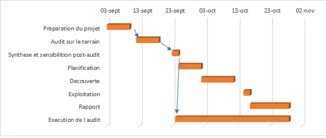
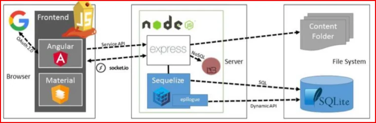
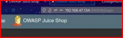
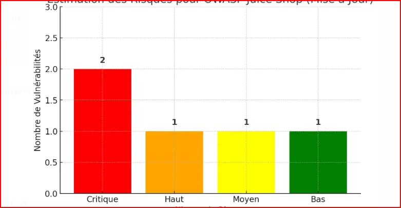

Le scan ne suffit pas. Il faut prouver l'exploitabilité.
ITEC SARL, une société de services et d'ingénierie logicielle, voulait sécuriser les applications SaaS qu'elle proposait à ses clients. Son processus reposait sur un scanner de vulnérabilités (Nessus) lancé une fois l'application terminée. Il listait des faiblesses potentielles, mais sans dire lesquelles étaient réellement exploitables.
Conséquence : les développeurs passaient des heures à corriger de faux positifs, tandis que des failles logiques, comme l'autorisation ou le contrôle d'accès, que les scanners détectent mal, restaient en production.
Question de recherche : comment mener un test d'intrusion qui garantisse la fiabilité d'une application SaaS avant sa mise en production, et comment industrialiser cette démarche ?
Problème
Audit limité à un scan automatique : des vulnérabilités listées mais non qualifiées.
Contrainte
Confidentialité oblige, les tests ont été rejoués sur OWASP Juice Shop, une application de référence volontairement vulnérable et représentative d'un SaaS moderne (Node.js, API REST, SPA).
Objectif
Identifier, confirmer et classer les vulnérabilités, puis livrer un rapport actionnable avec ses correctifs.
Un projet piloté comme une vraie mission d'audit.
J'ai rédigé le cahier des charges, découpé la mission en phases, estimé l'effort en jours-personnes et budgété le projet, en suivant les bonnes pratiques de la norme ISO/CEI 27002.
Planning de la mission

Livrable 1
Rapport des actions de lancement : périmètre, contacts, règles d'engagement.
Livrable 2
Rapport d'audit technique : constats, preuves, scores et correctifs.
Livrable 3
Note de synthèse pour la direction générale : risque global et orientations stratégiques.
Une démarche structurée, de la carte au rapport.
Le test a été mené en boîte grise : comptes de test fournis, mais pas d'accès au code source. La reconnaissance initiale n'était donc pas nécessaire, et l'effort a porté sur la cartographie, la découverte et la qualification des failles.
Planification
Mise en place d'un lab isolé, configuration du proxy d'interception, définition du périmètre.
Cartographie
Parcours de chaque fonctionnalité avec chaque rôle : formulaires, API, profils, flux de commande.
Découverte & validation
Tests ciblés sur les catégories de l'OWASP Top 10, puis confirmation manuelle de chaque faille pour écarter les faux positifs.
Rapport
Scores, mapping aux référentiels, recommandations et restitution aux équipes.


Périmètre de test
Règles d'engagement
- Environnement de test isolé, jamais la production.
- Escalade immédiate au client pour tout constat critique.
- Réunion d'urgence avec l'équipe technique avant de poursuivre les tests.
- Contre-test prévu une fois les correctifs appliqués.
Risque global : très élevé.
Cinq vulnérabilités confirmées et exploitables. Les deux plus graves pouvaient être enchaînées : un attaquant non authentifié pouvait obtenir les privilèges administrateur, puis accéder aux données de tous les utilisateurs.

| # | Constat | OWASP 2021 | NIST 800-53 | CVSS 3.1* | Risque |
|---|---|---|---|---|---|
| V-01 | Injection SQL sur l'authentification | A03 Injection | SI-10 | 9.8 | Critique |
| V-02 | Contournement d'autorisation via l'API | A01 Broken Access Control | AC-3, AC-6 | 9.1 | Critique |
| V-03 | Cross-Site Scripting (XSS) | A03 Injection | SI-10, SC-18 | 6.1 | Élevé |
| V-04 | Stockage des mots de passe inadéquat | A02 Cryptographic Failures | IA-5, SC-28 | 5.9 | Moyen |
| V-05 | Politique de mots de passe faible | A07 Identification & Auth. Failures | IA-5(1), AC-7 | 4.8 | Faible |
* Scores CVSS de base estimés. Le niveau de risque final tient compte du contexte métier : la XSS est rehaussée à « élevé » parce que le jeton de session est accessible au JavaScript.
Chaque faille, sa cause et son correctif.
Ce rapport public ne contient volontairement ni charges d'attaque ni preuves d'exploitation. Le rapport complet a été remis au client, comme l'exige la déontologie de l'audit.
V-01Injection SQL sur le formulaire de connexionCVSS 9.8
Constat
Le champ e-mail était concaténé directement dans la requête SQL. Une entrée malformée permettait de rendre la condition d'authentification toujours vraie, et donc de se connecter sans mot de passe en tant que premier compte de la base : l'administrateur.
Impact
- Prise de contrôle du compte administrateur sans authentification
- Accès aux autres comptes utilisateurs
- Point d'entrée vers la fuite de la table des utilisateurs (V-04)
Correctif recommandé : requêtes paramétrées
// ❌ Avant : la saisie de l'utilisateur devient du code SQL db.query(`SELECT * FROM Users WHERE email = '${email}' AND password = '${hash}'`) // ✅ Après : la saisie reste une donnée, jamais du code const user = await User.findOne({ where: { email } }) // ORM paramétré const ok = user && await argon2.verify(user.passwordHash, password)
À compléter par : messages d'erreur génériques (pas d'erreur SGBD renvoyée au navigateur), compte SQL applicatif à privilèges minimaux, validation des entrées par schéma.
V-02Création de comptes administrateurs via l'APICVSS 9.1
Constat
Le point d'inscription de l'API acceptait tous les champs envoyés par le client, y compris le rôle (mass assignment). Sans jeton ni cookie, n'importe qui pouvait créer un compte avec des privilèges administrateur. L'interface d'administration était en outre accessible à quiconque connaissait son URL.
Impact
- Élévation de privilèges verticale sans authentification
- Accès aux paniers et aux données d'autres clients (IDOR)
- Suppression d'avis clients : atteinte à l'intégrité
Correctif recommandé : autorisation côté serveur, liste blanche des champs
// ✅ Ne jamais faire confiance au client pour le rôle const { email, password } = schema.parse(req.body) // liste blanche stricte await User.create({ email, passwordHash: await argon2.hash(password), role: 'customer' }) // ✅ Contrôle d'accès centralisé, appliqué à chaque route sensible router.use('/admin', requireAuth, requireRole('admin')) router.get('/basket/:id', requireAuth, ownsResource('basket'), getBasket)
À compléter par : refus par défaut (deny by default), journalisation et alerte sur les tentatives d'accès aux ressources d'autrui, tests d'autorisation automatisés dans la CI.
V-03Cross-Site Scripting (suivi de commande, recherche)CVSS 6.1
Constat
Des paramètres saisis par l'utilisateur étaient réinjectés dans la page sans encodage. Un lien piégé pouvait ainsi exécuter du JavaScript dans le navigateur de la victime, dans le contexte de l'application.
Impact
- Vol du jeton de session, stocké côté client et lisible par le script
- Actions effectuées à l'insu de la victime
- Hameçonnage crédible depuis le domaine légitime
Correctif recommandé : défense en profondeur
// ✅ 1. Encodage en sortie : laisser le framework échapper, bannir le HTML brut element.innerHTML = query // ❌ element.textContent = query // ✅ (Angular : pas de bypassSecurityTrust*) // ✅ 2. Content-Security-Policy stricte Content-Security-Policy: default-src 'self'; script-src 'self'; frame-src 'none'; object-src 'none' // ✅ 3. Jeton de session hors de portée du JavaScript Set-Cookie: session=…; HttpOnly; Secure; SameSite=Strict
V-04Mots de passe hachés en MD5, sans selCVSS 5.9
Constat
Les mots de passe étaient stockés en MD5 sans sel : plusieurs utilisateurs partageaient la même empreinte, signe de mots de passe identiques. MD5 est rapide à calculer, donc très vulnérable aux attaques par dictionnaire et par force brute.
Impact
- En cas de fuite (par exemple via V-01), la plupart des mots de passe se retrouvent en clair rapidement
- Risque de réutilisation des identifiants sur d'autres services (credential stuffing)
Correctif recommandé : un hachage adaptatif
md5(password) // ❌ rapide, sans sel await argon2.hash(password, { type: argon2.argon2id }) // ✅ sel unique intégré, coût ajustable
Migration progressive : re-hachage transparent à la prochaine connexion de chaque utilisateur, puis réinitialisation forcée des comptes inactifs.
V-05Exigences de complexité des mots de passe insuffisantesCVSS 4.8
Constat
L'application acceptait des mots de passe courants, présents dans les dictionnaires publics, y compris pour des comptes à privilèges. Aucun verrouillage ni ralentissement ne protégeait l'authentification contre les tentatives répétées.
Impact
- Des comptes devinables par une attaque par dictionnaire
- Aucune détection des attaques par force brute
Correctif recommandé
- Mots de passe de 14 caractères minimum ou phrases de passe (recommandations SANS / NIST SP 800-63B)
- Rejet des mots de passe présents dans les listes de fuites connues
- Limitation du débit et verrouillage progressif après plusieurs échecs
- Journalisation des échecs de connexion, revue quotidienne et alertes
- MFA obligatoire pour les comptes administrateurs
Sévérité × complexité = ordre d'action.
Chaque constat est évalué selon trois axes : sa sévérité (CVSS ajusté au contexte), la complexité de sa correction (facile, modérée ou complexe) et la priorité qui en découle. Les équipes savent ainsi par où commencer.
V-05 passe en P2 malgré son risque faible : la correction est facile et elle réduit fortement l'efficacité d'une attaque combinée avec V-04.
Du pentest ponctuel à la sécurité continue.
Un audit en fin de projet coûte cher : corrections tardives, retards, frustration. Ma recommandation stratégique était d'intégrer la sécurité directement dans la chaîne DevOps existante, pour que chaque livraison soit testée automatiquement.
Code
SAST dans l'IDE (SonarLint) et revue de code sécurisée
Commit
Détection de secrets et hooks pre-commit
Build
SAST (Semgrep/Sonar) et analyse des dépendances (SCA)
Test
DAST automatisé (OWASP ZAP) sur l'environnement de préproduction
Release
Barrière de qualité : aucune faille critique ou élevée ouverte
Run
Journalisation, supervision et pentest manuel annuel
Exemple : barrière de sécurité dans GitHub Actions
name: security-gate on: [pull_request] jobs: sast: runs-on: ubuntu-latest steps: - uses: actions/checkout@v4 - uses: returntocorp/semgrep-action@v1 # analyse statique (OWASP Top 10) with: { config: p/owasp-top-ten } dast: needs: sast runs-on: ubuntu-latest steps: - uses: zaproxy/action-baseline@v0.12.0 # analyse dynamique sur la préproduction with: { target: ${{ vars.STAGING_URL }}, fail_action: true }
Ce que ce projet m'a appris.
Pour l'entreprise
- Failles critiques détectées et corrigées avant la mise en production
- Fin des corrections inutiles liées aux faux positifs
- Une méthode réutilisable pour les prochaines applications
- Une feuille de route DevSecOps et MFA pour les accès sensibles
Pour moi
- Piloter une mission d'audit de bout en bout : cadrage, budget, planning
- Qualifier un risque au-delà d'un score : contexte, enchaînements de failles
- Rédiger pour deux publics : développeurs et direction
- Respecter la déontologie : escalade immédiate et divulgation responsable
Limite assumée : l'audit portait sur la couche applicative. Un SaaS comporte aussi des couches d'infrastructure, de réseau et d'identité, et une faiblesse dans l'une peut compromettre les autres. La suite logique serait un audit de la configuration cloud et de la gestion des identités.